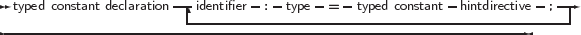
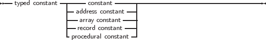

Sometimes it is necessary to specify the type of a constant, for instance for constants of complex structures (defined later in the manual). Their definition is quite simple.
_________________________________________________________________________________________________________
Typed constant declaration


___________________________________________________________________
Contrary to ordinary constants, a value can be assigned to them at run-time. This is an old concept from Turbo Pascal, which has been replaced with support for initialized variables: For a detailed description, see section 4.4, page 223.
Support for assigning values to typed constants is controlled by the {$J} directive: it can be switched off, but is on by default (for Turbo Pascal compatibility). Initialized variables are always allowed.
Remark: It should be stressed that typed constants are automatically initialized at program start. This is also true for local typed constants and initialized variables. Local typed constants are also initialized at program start. If their value was changed during previous invocations of the function, they will retain their changed value, i.e. they are not initialized each time the function is invoked.